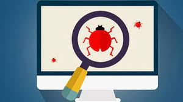

Bug It Out
- This is an online bug tracking system for projects.
- The application allows software testers to repoort bugs for project,
- Product managers to view all bugs, assign bugs to developers
- Developers to update the bugs status

What is a bug?
In computer technology, a bug is a coding error in a computer program. (We consider a program to also include the microcode that is manufactured into a microprocessor.) The process of finding bugs -- before users do -- is called debugging.
Debugging starts after the code is written and continues in stages as code is combined with other units of programming to form a software product, such as an operating system or an application.
Bugs are often discovered after a product is released or during public beta testing. When this occurs, users have to find a way to avoid using the buggy code or get a patch from the software developers.